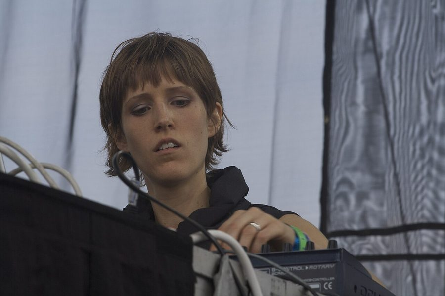

Kate Simko preps her London Electronic Orchestra


.jpg){kind=link}
Kate Simko preps her London Electronic Orchestra
A Chicago native with already a decade of DJ/producer experience behind her, Kate Simko’s move to London represented the opportunity to develop the other side of her musical identity. While she’s versed in the rich heritage of her home city’s underground sounds, she also has a background in classical piano and jazz; inseparable from her work as an electronic producer.
Kate moved to London two years ago to commence her Masters in Composition for Screen for the Royal College of Music, and she tells Data Transmission that it allowed her to bring her dual loves of club music and classical composition even closer together.
“I feel very alive and passionate about this, the sound that you can get from these live instruments, and then combining this with beautiful electronic soundscapes and beats. So that’s kind of where I’m at, at the moment I’m super excited about combining them both.”
Her main creative project for exploring this is the London Electronic Orchestra. Formed from the resources she’s been able to draw on at the Royal College of Music, as well as a cast of live players, they’ve already performed their first show at London’s National Gallery.
Kate already has an extensive production history behind her, with several albums under her belt, alongside plenty of straight-up dancefloor material that included last year’s particularly lush ‘Lost in London’ EP for the Get Physical stable. However, she says she’s got plenty got more on the horizon with London Electronic Orchestra, as that project moves into higher gear.
However, this doesn’t mean she’s winding down her long-established presence as a house and techno DJ. Following a quick trip over to Brazil to play the legendary Warung club, she’ll be appearing at London’s Summer In The City festival. Data Transmission caught her on the phone before the show, to find out more about what she’s got planned.
So what’s your main focus at the moment?
To be honest, I’m working on getting a visa to stay in the UK, that’s the number one thing I’m doing right now. I’m graduating from this Masters course at the Royal College of Music in July, and right now I’m looking into my application into an ‘Exceptional Promise Visa’, which is based on a lot of things that I’m doing here. But I’m mostly trying to continue what I’ve been doing with London Electronic Orchestra project that I started. The main core players are all London based, and I have access to the recording studio here for two more years. So while I say it’s my visa I’m focusing on, it’s all connected. I genuinely want to work on and grow this project.
What are the future plans for London Electronic Orchestra?
We just did a show at the National Gallery, which is a big art museum here, and I’m in talks to do a somewhat regular thing in Ibiza this summer, which could be really cool. The idea of that is crazy actually. We were talking about it months ago, and now it’s back on the table and could be happening later in the season… And then we’re gonna do the next full show in New York in September. That will have an actual conductor, and a nice ensemble and everything. So that’s very exciting. So it’s about getting things off the ground at the moment, recording and then releasing the first record, and stuff like that. Deciding which label I’ll go with.
So we’ll see studio work from the project?
Yep. I have three originals that are already done. It’s just gonna be a matter of getting into the studio and recording everything. I’m making the beats separately, and then I’ll record with the musicians at the studio here in London. So that’s why I need to stay in London, otherwise I’ll need to find a whole new orchestra [laughs].
Dance culture has really been taking off back in your home country, so it was an interesting time to choose to relocate to London.
The main reason that I moved to London was to do this college course, which I’m just finishing now, which is a Masters in Composition for Screen. This is something that I’ve been doing for 10 years already, scoring films, and I love it. I realised that I had certain limitations because I didn’t know how to write for orchestra. And I really wanted to combine the orchestra with electronics, and basically be able to score films and create my own music with orchestra as an option. So I’d found this program at Royal College of Music in London, and they were really open-minded to my background in electronic music, and they have an amazing classical history, it’s just an awesome college. And after the last two years of study, I now know how to write for an entire orchestra. So that’s why I decided to move to London.
It’s enabled me to just jump on a flight and go play anywhere in Europe. It’s been good for me. I’m from Chicago, and I spent all of my 20s in the states, and I played in New York, Miami, all over the states actually. If and when I go back, it will be really great then to see how things are changing and evolving. But I was happy to have some time based here. And I don’t feel like I’m done here at all. I really want to be able to get a chance to play more in Europe, and see how things are different. It’s given me a different influence in my life. If things are going amazing in the States, that’s awesome, and I can always go back. But I don't think I’ll ever regret having a different point of view and a parallel experience.
Looking at your involvement with soundtrack work, I’ve realised there are actually a lot of underground electronic artists with a dual career in soundtracks and sound design.
Personally, I genuinely want to score films, rather than working or on commercials or the sound design side of things. I’ve started to meet some young film directors in London who have a real vision for their film, and I’d love to partner with them and to be able to combine my own musical vision with that; so I’m approaching it more from the artistic side, rather than viewing it as another source of income. And I would love that to be a catalyst for having more electronic music in bigger films down the line, if I was ever given that opportunity, and now that I can score for orchestra. To bridge that gap, and to score a Hollywood film that combines the elements that I love in electronic music with the more typical Hollywood sound. So that’s my dream for it.
But I’m not somebody to compromise my musical integrity for other opportunities. So sure, if I’m able to get film work and that’s helping keep everything going, and in that sense there are no compromises needed in terms of the music that I DJ and produce… Sure. As a musician, you have to find your own way. I’m really happy with doing both, and they inspire each other I find too.
You’ve got around a decade behind you in terms of releases, albums, DJing and so forth. Looking back, what do you feel you’ve achieved and where do you want to take it moving forward?
The degree has just been so intense and keeping me so busy the past two years. You’re asking me these big level questions that I haven’t had time to ask the past few years [laughs]. That said, my time here has been blessed. I chose to go back to school, and be in this safe environment where you’re allowed to explore and try different things. I’ve had recording sessions that had completely flopped as I was using the instruments in ways they weren’t meant to be used; and that’s fine. It’s completely different to producing dance music, where if you get it wrong, it’ll clear the dancefloor. Here, you present your work to your professor, and you get feedback on it. So you’re in this kind of safe zone. I haven’t been comparing myself to other people, I haven’t had the worry of how many DJ gigs are in my diary every weekend, I’ve genuinely been focused on the artistic side of music. So I just want to be able to take all of that, to record the material that I’ve been working on, to continue these relationships, and genuinely try and present something new that I genuinely feel is challenging and exciting. And really try and get this project out there. There are not many people in the classical world who are performing with electronic music, and in that world it would be something different and exciting.
Kate Simko plays Summer in the City on August 9 at London's Tobacco Dock. For more information and tickets head to londonwarehouseevents.co.uk/lwe-presents-summer-in-the-city-2
Words: Angus Thomas Patterson